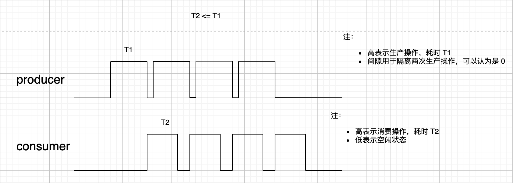

生产者 - 消费者模型
对于生产者 - 消费者问题，一定会有以下四种场景：
- 生产比消费快，出现背压
- 生产比消费慢，出现空转（无效读）
- 生产和消费一样快
- 上述情况的混合
为了处理上述所有情况，需要在这些过程之间有一个缓冲区，生产者将数据写入缓冲区，然后消费者从缓冲区读取。
交互方式
两者间有以下两种交互方式。
并行
- 生产者产生一个数据块后，消费者立即开始消费该数据，此时生产者继续生产数据
此时生产者和消费者并行运行，效率高。

串行
- 生产者生产一个数据块后，等待消费者，直到消费完，生产者才继续生产数据块
此时生产者和消费者串行，效率低。
交互结果
两者间的交互会有以下结果：
- 如果生产比消费慢，需要防止消费者尝试从空缓冲区读取数据，即一旦缓冲区为空就暂停消费者
- 如果生产比消费快，需要防止缓冲区溢出，即每当缓冲区已满时暂停生产者